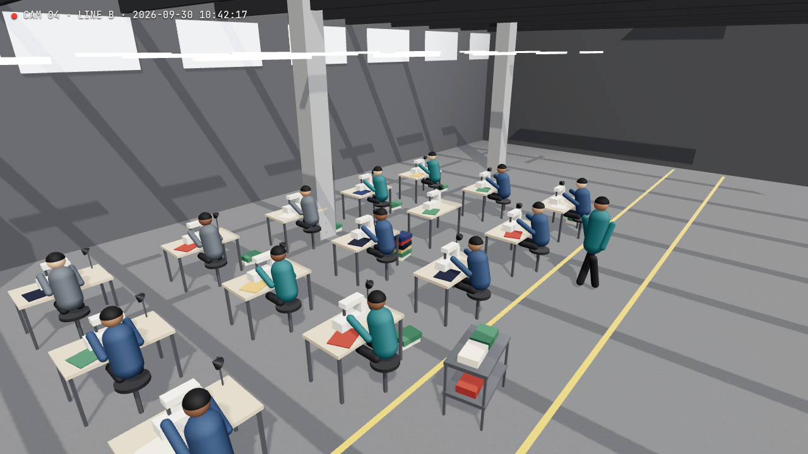

Line B · Camera 04
Line B · Camera 04
RTSP · 1080p● Processed on-site

● LIVEB3 · sewing
B4 · unattended 03:12
queue · 6 bundles
operator away from B5
C3 · sewing
Shift timeline · Line B 06:00 to 10:42
B1
B2
B3
B4
B5